Panel principal
index.php
Punto de entrada del sistema. Desde acá se accede a todos los módulos, y la visibilidad de cada acceso depende del perfil del usuario que inició sesión.
Recorrido en video
Captura de pantalla
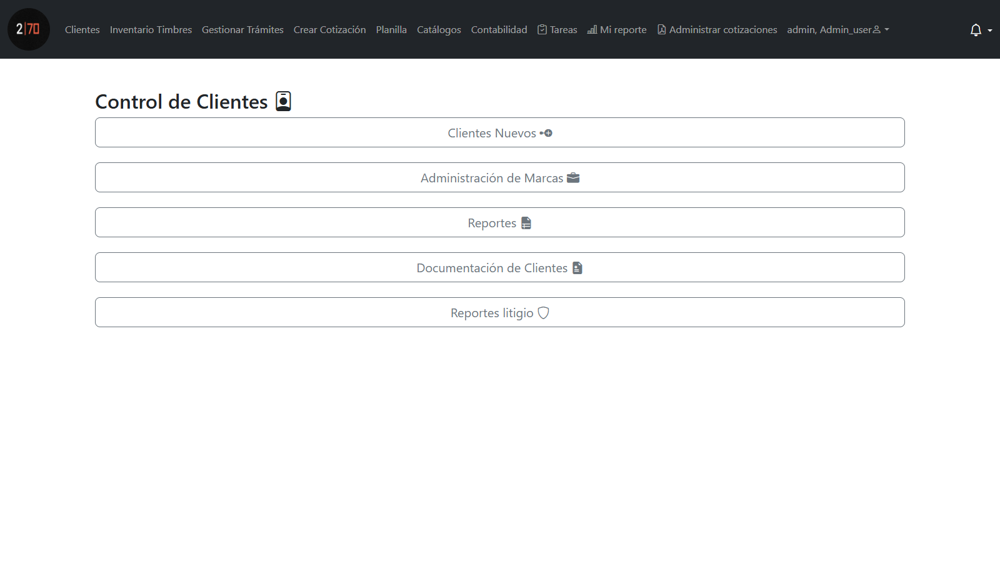
Recorrido de módulos con captura de pantalla y video. Generado el 10 de noviembre de 2026.
index.php
Punto de entrada del sistema. Desde acá se accede a todos los módulos, y la visibilidad de cada acceso depende del perfil del usuario que inició sesión.

listado_clientes_nuevos.php
Listado completo de clientes con el total a la vista: 13.761 registros. Cada fila trae vendedor asignado, estado de la venta, red social de origen, trámite inicial, costo, número de trámites y fecha de inicio. Se filtra por estado, red social, tipo de trámite y rango de fechas, o se busca por nombre, teléfono o código.
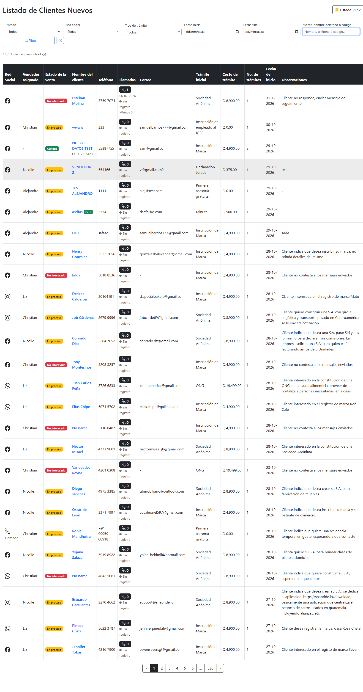
ficha_cliente.php?id_cliente=4333
La ficha del cliente generada como documento: datos, trámites, costo de cada uno y saldo pendiente. Se produce desde el sistema con los datos del expediente, sin re-tipear nada a mano.
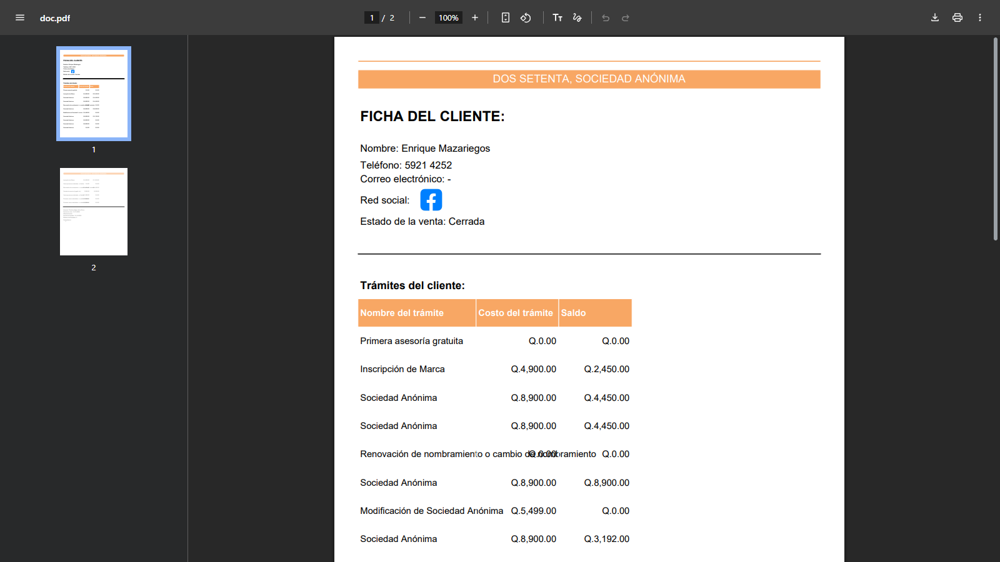
historial_coti_clientes.php
Historial de cotizaciones con su estado de venta. Cada cotización se genera en dos monedas y dos formatos, se puede reutilizar, reordenar ítems y dejarle notas.
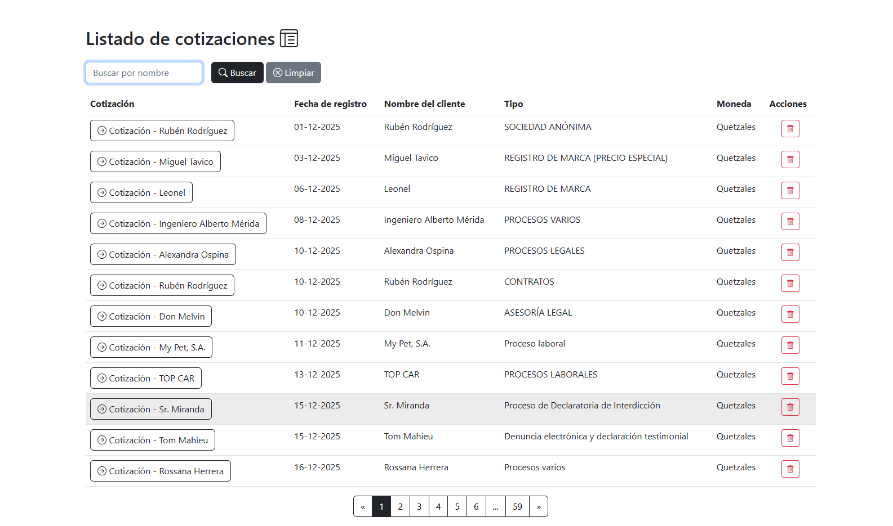
listado_tramites.php?pagina=1
El catálogo de servicios con su costo: registro de marca, sociedades anónimas, patentes, contratos, declaraciones juradas. Es la base sobre la que se cotiza y se calcula cada expediente.
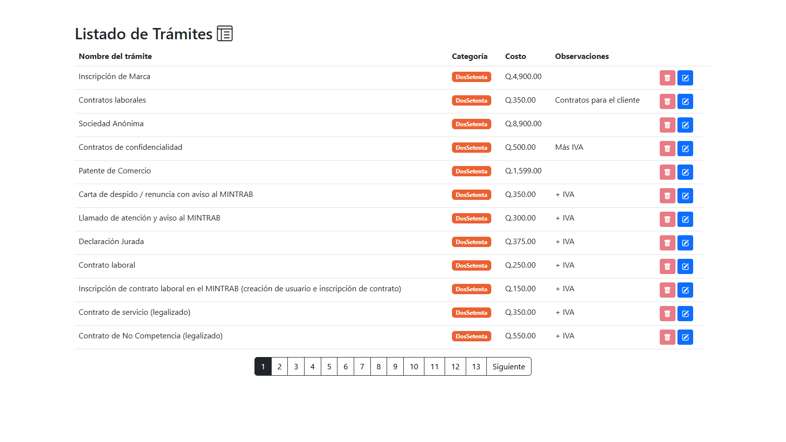
doc_clientes.php
Estado de cada cliente frente a sus trámites: finalizados, en proceso o sin registrar, con la marca o sociedad asociada. Setenta y ocho páginas de expedientes navegables y filtrables.
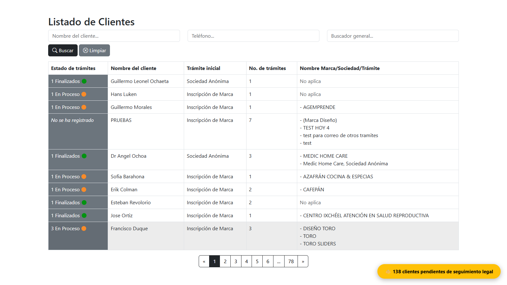
listado_admon_marcas.php?page=1
Gestión del registro marcario: expedientes por tipo de solicitud, comprobantes de pago, títulos y reportes de pago por período. Más de quinientos expedientes con sus archivos asociados.
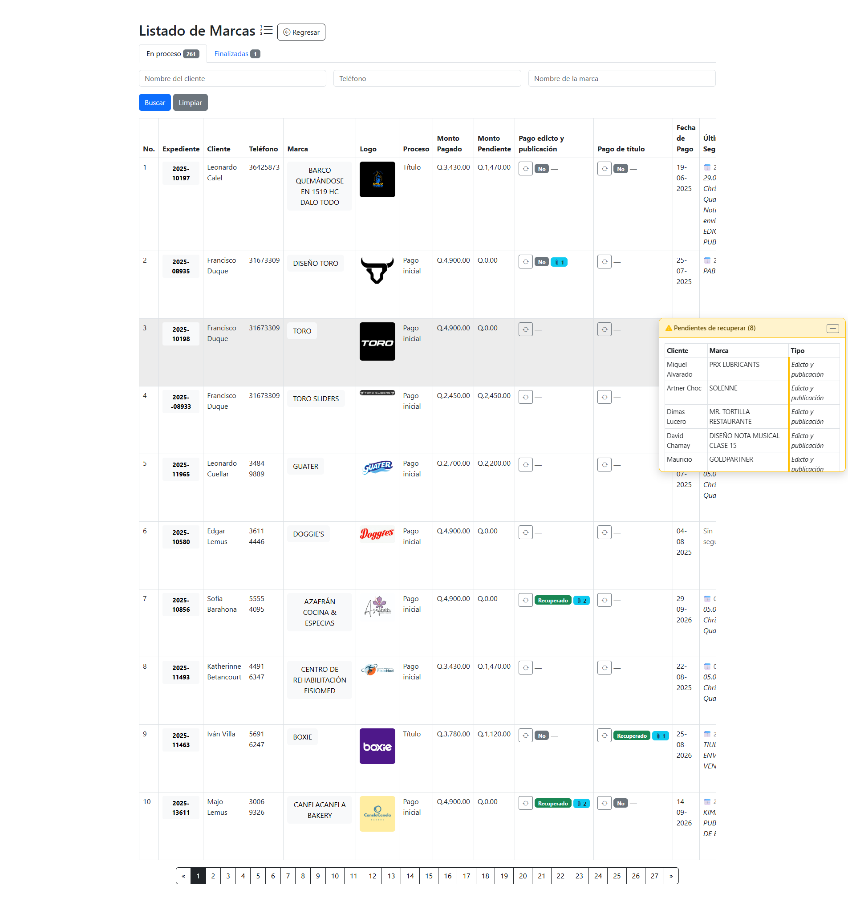
reporte_llamadas.php
Seguimiento de llamadas a clientes: quién llamó, cuándo, cuántos intentos y en qué quedó. Con búsqueda, filtros y exportación a PDF desde la misma pantalla.
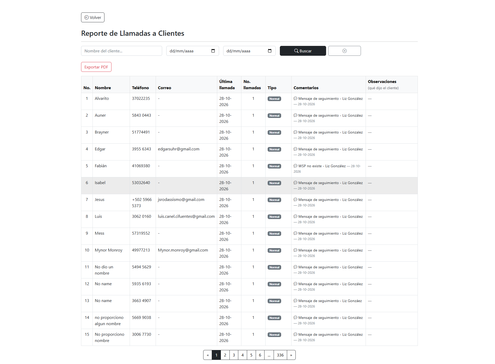
marcas/reporte_pagos_marca.php
Estado de cuenta de cada expediente marcario: monto total, pagado, pendiente, pago de edicto y pago de título. Es el reporte que reemplaza el seguimiento manual de cobros.
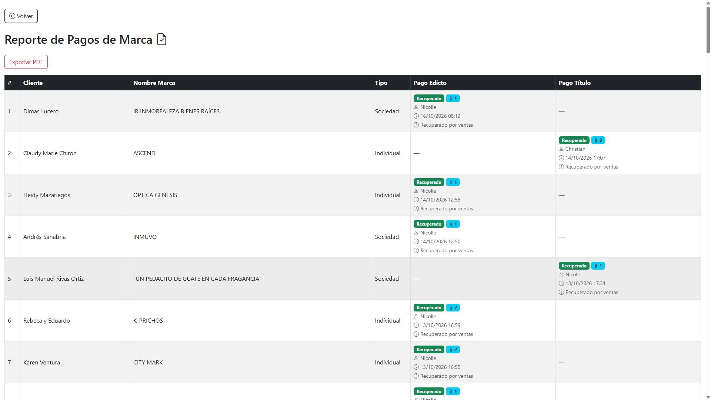
bitacora.php
Cada acción registrada: quién hizo qué y cuándo. Cuando hay un error en un expediente, esto es lo que permite reconstruir qué pasó en lugar de suponerlo.
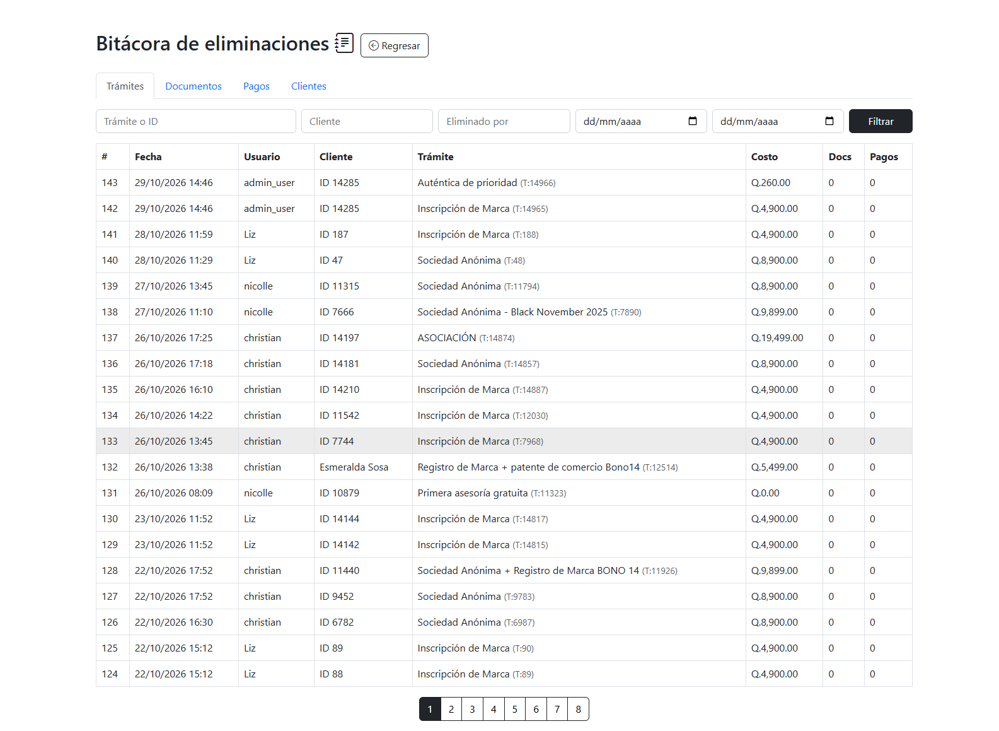
asistencia/tareas_dia.php
Marcaje de entrada y salida, control de almuerzos y salidas extraordinarias. Tareas del día con múltiples responsables, prioridad, comentarios, documentos adjuntos y notificaciones.
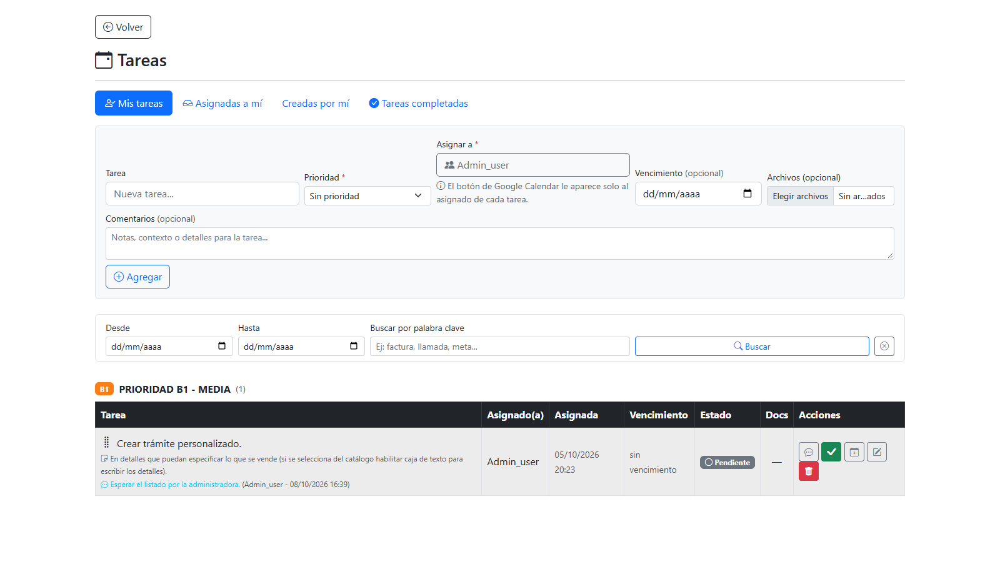